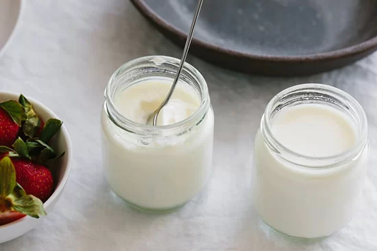

Yogurt

take down Michael Weston at his own game
Ingredients
milk
yogurt starter
jar
Steps
heat milk
cool milk
add yogurt starter
put into jar
stir
incubate 7-9 hrs
chill in fridge (not you, the yogurt)